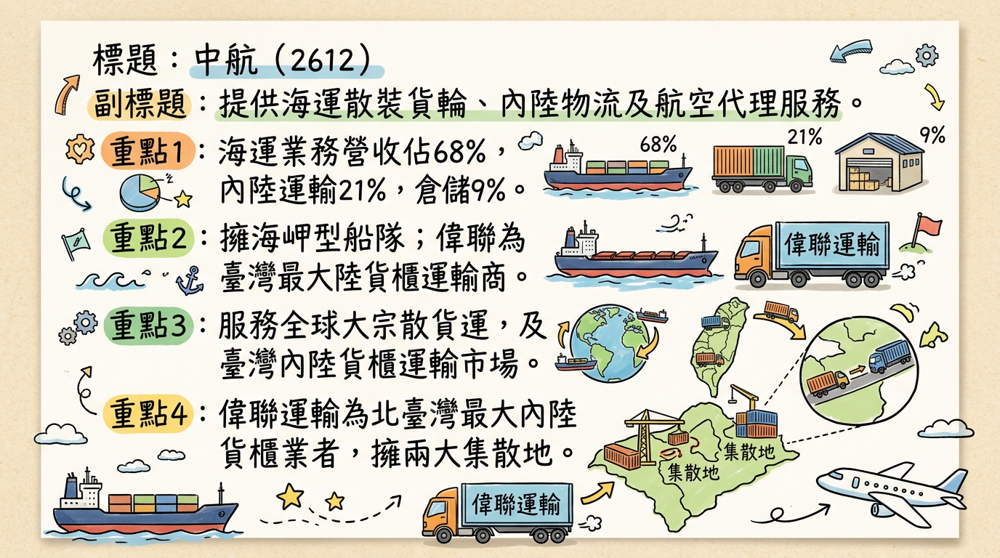
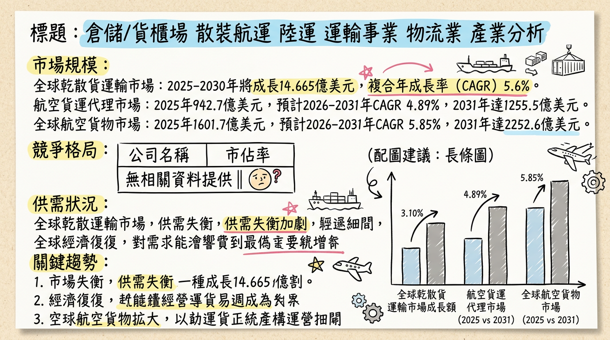
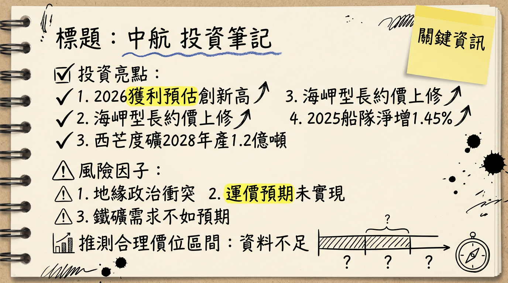

2612 中航 深度研究報告
一句話摘要
中航憑藉其純海岬型船隊及長約營運模式，有效抵禦運價波動風險。在西非西芒杜鐵礦項目量產所帶來的長水路運輸需求，以及2026年下半年新世代環保節能船隊陸續交付的雙重催化下，預期中航2026年營運表現將持續向上，獲利有望再創新高，值得投資人持續關注。
公司概覽
中航（2612）是一家臺灣上市的航運公司，業務多元，涵蓋海運、陸運及航空代理，以穩健經營著稱。
核心產品與服務：
- 海運業務： 經營海岬型散裝貨輪船隊，專注於鐵礦石、煤炭、鋁礬土等大宗乾散貨物的國際運輸。其長約模式有助於穩定營收與利潤。
- 陸運與倉儲： 透過子公司偉聯運輸，提供臺灣內陸貨櫃拖車運輸服務，並經營大型貨櫃集散站，為北臺灣主要內陸貨櫃運輸業者之一。
- 航空代理： 擔任沙烏地阿拉伯航空公司在臺灣地區的總代理，拓展航空貨運與旅遊服務。
營收結構 (依業務別，截至近期資料)：
| 業務類別 | 營收佔比 |
|---|
| 海運 | 68% |
| 內陸運輸服務 | 21% |
| 倉儲 | 9% |
中航透過其百分之百轉投資的海外子公司，在香港及新加坡經營海岬型散裝貨輪船隊。在陸運方面，其子公司偉聯運輸在北臺灣擁有兩大貨櫃集散地。目前未有各基地具體營收貢獻比例資料。
核心競爭優勢
專精海岬型船隊與長約模式： 中航船隊清一色為海岬型散裝貨輪，並以長約模式與主要礦商簽訂運輸合約，使其營收與毛利率在散裝航運市場波動中相對穩定，有效降低現貨運價劇烈波動帶來的風險。
受惠西非鐵礦砂長水路需求： 西非西芒杜鐵礦砂礦區預計於2025年底量產，其運距為澳洲的三倍，將顯著提升海岬型船的長程運輸需求。中航純海岬型船隊的特性將使其直接受益於此結構性增長。
船隊年輕化與環保節能優勢： 公司積極進行船隊汰舊換新，已訂造4艘21萬載重噸散裝貨輪，預計於2026年下半年起陸續交付。新世代環保節能船將有助於符合日益嚴格的國際環保法規，提升營運效率，並可能因低碳排放獲得更佳的租賃條件。
陸運與倉儲的穩定貢獻： 子公司偉聯運輸在內陸貨櫃運輸與倉儲領域具有領先地位，提供穩定的現金流與獲利貢獻，有效平衡海運業務的週期性波動。
財務分析
月營收趨勢
中航近六個月月營收表現如下：
| 月份 | 金額 (億元) | 月增率 MoM | 年增率 YoY |
|---|
| 2026年1月 | 4.20 | -9.06% | -1.25% |
| 2025年12月 | 4.62 | +14.10% | +6.68% |
| 2025年11月 | 4.05 | +3.74% | -4.74% |
| 2025年10月 | 3.91 | +0.72% | -6.51% |
| 2025年9月 | 3.88 | -3.86% | +1.71% |
| 2025年8月 | 4.03 | -0.74% | -1.38% |
季度數據
2025年第三季單季財務表現：
- 季營收： 11.97億元 (計算方式：2025年前三季累計營收36.35億元 - 前兩季累計營收24.38億元)
- 毛利率： 33.46%
- 營業利益率： 23.17%
- EPS： 1.16元
年度趨勢
| 年度 | 營收 (億元) | EPS (元) |
|---|
| 2024實際 | 46.38 | 5.13 |
| 2025預估 | 48.93 | 4.09~5.75 |
2025年EPS預估區間為法人機構平均預估。
法說會重點
2025年12月19日（線上法人說明會）摘要：
- 市場展望： 管理層對2026年散裝海運市場持中性偏樂觀看法，特別看好海岬型船表現，主要受惠於西非西芒杜鐵礦石項目推進帶來的長水路貨運量增長。
- 產品線展望： 預計2026年西非鋁土與鐵礦貨量增長將大幅帶動本業業績。
- 產能與資本支出：
* 公司已向台船訂造4艘21萬載重噸散裝貨輪。
* 2026年第三季與第四季預計各有一艘21萬噸大海岬型船交船。
* 2027年與2028年也各有兩艘21萬噸大海岬型船交船，可望逐年拉高營收與獲利。
* 公司將評估船價，考慮在2026年下半年新船交付時出售一艘船齡達17年的舊船，以持續推動船隊年輕化。
- 年度指引： 管理層預計2025年全年獲利與2024年相當。
券商觀點
目前未找到2025-2026年具體券商名稱、目標價、EPS預估數字或評等調升/調降的最新公開資料。下表為預期格式，待資料更新後填寫。
| 券商名稱 | 目標價 (元) | 評等 | 日期 | 備註 |
|---|
| 無最新資料 | N/A | 無最新資料 | 無最新資料 | 等待更新中 |
| 無最新資料 | N/A | 無最新資料 | 無最新資料 | 等待更新中 |
| 無最新資料 | N/A | 無最新資料 | 無最新資料 | 等待更新中 |
財報深度分析
利潤率趨勢
中航近八季的毛利率、營業利益率、稅前淨利率、稅後淨利率表現：
| 季度 | 毛利率 | 營業利益率 | 稅前淨利率 | 稅後淨利率 |
|---|
| 2025年Q3 | 33.46% | 23.17% | 20.06% | 19.35% |
| 2025年Q2 | 32.06% | 21.63% | 33.78% | 29.80% |
| 2025年Q1 | 31.20% | 21.10% | 20.00% | N/A |
| 2024年Q4 | 29.20% | 18.00% | 46.80% | N/A |
| 2024年Q3 | 25.60% | 16.30% | 10.40% | N/A |
| 2024年Q2 | 23.90% | 13.80% | 17.60% | N/A |
| 2024年Q1 | 22.60% | 10.80% | 13.20% | N/A |
中航的利潤率在2024年以來呈現穩步上升趨勢，尤其在2025年Q2因出售船舶獲得760萬美元（約貢獻EPS 1.26元）處分利益，帶動稅前淨利率與稅後淨利率顯著提升。核心本業利潤率（毛利率、營業利益率）的改善，主要得益於散裝船市場季節性需求回升，以及西非西芒杜鐵礦啟運所帶動的「運距倍增」效應，使海岬型船供需快速收緊，有利於運價向上，進而提升長約換約時的價格談判優勢，進一步推升毛利表現。法人預期2026年西芒度鐵礦的首個完整出貨年度將吸納全球海岬型約5%有效運力，加上新造船比重偏低，將使海岬型船運價基礎更為穩固。
存貨分析
中航近四季存貨與應收帳款趨勢：
| 季度 | 存貨週轉天數 | 存貨週轉率 (次) | 應收帳款週轉天數 |
|---|
| 2025年Q3 | 5.06 | 17.80 | 19.41 |
| 2025年Q2 | 6.78 | 15.11 | 19.68 |
| 2025年Q1 | 5.63 | 16.78 | 18.43 |
| 2024年Q4 | 4.41 | 23.37 | 18.59 |
中航作為航運公司，其存貨週轉天數普遍較低，維持在5-7天之間，顯示其營運模式以提供運輸服務為主，對存貨需求不高，且管理效率良好。應收帳款週轉天數維持在20天左右，亦屬穩健，顯示公司收款效率良好。目前未有存貨異常堆積或備料現象。
資本支出
近三年資本支出金額與趨勢：
- 2025年Q3：203,812仟元
- 2025年Q2：366,220仟元
- 2025年Q1：136,987仟元
- 2024年Q4：207,644仟元
- 2024年Q3：-176,077仟元 (負值可能包含出售資產或收款)
- 2024年Q2：2,643,895仟元
- 2024年Q1：-26,060仟元 (負值可能包含出售資產或收款)
資本支出在2024年Q2有顯著增加，此後季度性波動，但整體仍維持一定水準。此高額資本支出主要反映公司在2024年8月向台船訂購新船的投入。
未來資本支出計畫與預計新增產能：
- 中航已訂造4艘21萬載重噸紐卡斯爾極限型新世代高規格環保節能散裝輪。
- 首批兩艘新船預計在2026年下半年交付營運。
- 後續兩艘新船預計在2027年上半年交付營運。
- 公司另有選擇權兩艘，並表示2027年和2028年也各有兩艘21萬噸大海岬型船交船，可望逐年拉高營收與獲利，持續推動船隊年輕化，提高營運效率並節能。
股權異動
近期董監事/大股東申報轉讓紀錄
- 最近一筆申報轉讓紀錄發生在2023年7月24日，法人董事代表人彭蔭剛申報轉讓中航股票1,980.23張，轉讓方式為鉅額逐筆交易。
- ⚠️ 過時資訊： 此筆紀錄已超過2024年，未找到2024-2026年董監事/大股東申報轉讓的最新資料。
庫藏股買回紀錄
- 未找到2024-2026年期間中航(2612)有庫藏股買回紀錄。
可轉換公司債（CB）
- 未找到2024-2026年期間中航(2612)有發行可轉換公司債(CB)的最新資料。
增減資計畫
- 未找到2024-2026年期間中航(2612)有現金增資或減資計畫的最新資料。
股利政策
中航近年來主要以現金股利形式回饋股東：
| 所屬年度 | 發放年度 | 現金股利 (元/股) | 除息日 | 現金發放日 |
|---|
| 2024 | 2025 | 2.1 | 2025年5月28日 | 2025年6月27日 |
| 2023 | 2024 | 1.0 | 2024年7月9日 | 2024年8月8日 |
產業分析
市場規模與 CAGR 成長率
全球乾散貨運輸市場：
- 預計從2025年到2030年將成長14.665億美元，預測期內複合年成長率（CAGR）為5.6%。
全球航空貨運代理市場：
- 預計2025年為942.7億美元，2026年達到988.8億美元，2026年至2031年間CAGR為4.89%，到2031年達到1255.5億美元。
全球航空貨物市場：
- 預計2025年為1,601.7億美元，2026年為1,695.3億美元，2026年至2031年間CAGR為5.85%，到2031年達到2,252.6億美元。
競爭格局
台灣同業比較 (2025年數據，部分為預估或累計)：
| 公司名稱 | 股號 | 2025年營收規模 (億元) | 2025年毛利率 | 2025年EPS (元) | 備註 |
|---|
| 裕民航運 | 2606 | 155.6 | 28.8% | 4.31 | 船隊規模百艘，含海岬型，布局LNG運輸船。 |
| 中航 | 2612 | 48.94 | 32.24% (Q3) | 4.21 | 純海岬型船隊，長租模式，內陸運輸與航空代理。 |
| 慧洋-KY | 2637 | 168.96 | 未找到 | 5.3 (稅前) | 船隊達127艘，逾九成符合環保標準。 |
| 新興 | 2605 | 44.07 | 未找到 | 未找到 | 除散裝外，擁有3艘超大型油輪(VLCC)。 |
| 台航 | 2617 | 31.25 (Q3) | 40%以上 (Q3) | 2.36 (Q3) | 平均船齡5.7歲，積極汰舊換新。 |
產業趨勢
綠色航運與脫碳趨勢： 國際海事組織（IMO）設定2050年淨零排放目標，歐盟ETS自2024年起實施碳排放交易。這將加速老舊高污染船舶淘汰，雙燃料或節能船隊（如中航新訂船隻）將具備顯著競爭優勢與成本效益，是產業升級的關鍵驅動力。
數位化與自動化： 航運業正加速導入AI路徑優化、遠程遙控技術，以降低燃料與人力成本，提升營運效率。港口到船舶即時可視性及自主導航技術的應用，預計將推動整合船舶自動化系統市場在2026年達到67億美元，並以11%的CAGR成長。
對中航而言的具體機會和威脅：
*
長約模式穩定營收： 在運價波動市場中，長約模式確保中航維持相對穩定的毛利率與淨利率。
* 海岬型船隊受益於特定貨種需求： 中國基礎建設刺激政策帶動鐵礦砂與鋁土礦需求，尤其幾內亞西芒杜礦區投產與糧食運輸旺季，均支撐海岬型船舶運價，中航純海岬型船隊有望直接受益。
* 綠色轉型帶來的船隊優化需求： 中航新訂的節能環保船隊將使其在日益嚴格的環保法規下佔據有利位置，加速老舊船淘汰也減少競爭壓力。
*
全球經濟前景不確定性： 全球經濟疲弱、地緣政治衝突等因素，可能導致乾散貨運輸需求成長趨緩，壓抑運價。
* 新船交付量創高： 儘管中航船隊新船訂單比低，但2026年預計將有超過600艘乾散貨新船交付，可能對整體市場運力供給造成壓力。
* 綠色燃料成本與供應： 綠色轉型雖為機會，但其高昂成本與有限供應可能增加營運費用。
相關投資題材
- AI 與數位化： 航運業的數位化與自動化趨勢，雖然中航直接連結較少，但在其陸運與倉儲業務中，港區物流的自動化與智慧化發展，以及因風電與AI產業帶動的倉儲需求，為相關業者提供了中長期能見度。
- 能源轉型相關礦產運輸： 能源轉型持續推動對鋁礬土等礦產的需求，支撐中航海運業務中的大宗乾散貨物運輸。
- 基礎建設與製造業： 中國大陸等主要經濟體的基礎建設投資與製造業活動，對鐵礦砂、煤炭等原物料的需求，直接影響中航的核心海運業務。
近期催化劑
利多事件清單
- 2026年3月3日： 中航股價漲逾4%，受惠於海岬型長約換約價上修與運價淡季不淡，市場預期運價有望加速上行，獲利可望續創新高。
- 2026年3月2日： 美伊戰事使航運市場緊張，中航因長約換約價上修，法人看好Capesize運價反彈延續，並於3月起加速上漲。
- 2026年2月26日： 散裝航運股利多頻傳，西非西芒度鐵礦場於2025年11月投產並啟運第一批鐵礦石，年產能預計2028年達1.2億噸，提供2026-2027年散裝航運新增需求成長動能。中國大陸農曆年後開工將重啟原物料運輸需求，散裝運價看漲。
- 2025年12月19日（法說會）： 管理層表示海岬型船現貨日租金創二年新高，鐵礦砂價格維持高點，西非新礦區帶來長水路運輸需求。全球船隊噸位淨成長率預計維持低位（2025年約1.45%），新船交付數量低，有助於維持市場供需平衡。
- 2025年10月15日： 中航股價受惠於國際重建需求，如以色列與哈瑪斯停火協議後帶來的300億美元商機，推升波羅的海海峽型指數（BCI）狂飆逾21%，波羅的海綜合指數（BDI）大漲10.7%。
- 2024年8月27日： 委託台船建造新一代21萬噸級海岬型散裝貨輪兩艘，另有選擇權兩艘，預計2026年下半年起陸續交付，推動船隊年輕化與環保升級。
利空事件清單
- 2026年3月4日： 中航股價盤中大跌7%，三大法人合計賣超450張，外資賣超399張，自營商賣超52張，顯示短期有獲利了結壓力。
- 2026年1月營收： 4.20億元，月減9.06%，年減1.25%，顯示農曆年前工作天數減少與部分需求觀望。
- 2025年1月至9月累計綜合損益總額： 為新台幣-407,493仟元，主要受其他綜合損益的負值影響，可能對短期市場情緒產生壓力。
股東會/法說會重要決議
- 2026年3月12日： 預計召開董事會，提報民國114年（2025年）合併財務報告。
- 2025年5月28日： 預計除息，發放現金股利2.1元（所屬年度2024年）。
外資/投信近期買賣超張數 (近一週，截至2026年3月4日)
| 日期 | 外資買賣超 (張) | 投信買賣超 (張) | 自營商買賣超 (張) | 三大法人合計 (張) |
|---|
| 2026年3月4日 | -399 | 0 | -52 | -450 |
| 2026年3月3日 | +1,090 | 0 | +24 | +1,110 |
| 2026年3月2日 | -768 | 0 | -35 | -803 |
| 2026年2月26日 | +1,197 | 0 | +49 | +1,245 |
2026年1月至3月2日，外資累計買超4,100張，佔發行量2.08%；投信賣超70張。近期外資多偏買超，但有短暫調節情況。主力籌碼在1月底後明顯回補，近期短暫轉為賣超，屬高檔換手格局。
⭐ 成長動能時間軸
| 時間點 | 成長動能 | 具體事件與影響 |
|---|
| 2024年8月27日 | 擴廠/產能擴充/船隊更新 | 中航委託台船建造4艘21萬噸級海岬型散裝貨輪 (2艘確定，2艘選擇權)。此為未來數年營運成長與船隊現代化的重要基石，單艘造價約7600萬～7980萬美元。 |
| 2025年11月 | 新市場/新需求 | 西非西芒度鐵礦場投產並正式啟運第一批鐵礦石至中國大陸。此礦區為全球最大未開發鐵礦，其長水路運輸距離 (為澳洲的三倍) 將顯著增加海岬型船的延噸海浬需求，中航純海岬型船隊將直接受益。 |
| 2025年12月 | 需求面 / 運價回升 | 海岬型船舶運價飆漲，平均日租金一度攻上44,000美元。國際重建需求 (如以哈衝突後300億美元商機) 推升散裝運價。 |
| 2026年Q1 (農曆年後) | 需求面 / 運價回升 | 中國大陸農曆年後開工，重啟原物料運輸需求，有利於散裝運價加速上漲。法人看好Capesize運價在1月中旬起的反彈漲勢可望延續，並於3月起加速上漲。 |
| 2026年下半年 | 新產能上線 / 船隊更新 | 首批兩艘在台船建造的21萬噸大海岬型船預計交付營運。新世代環保節能船型將有助於提升營運效率，符合環保法規，並可能進行汰舊換新 (出售1艘船齡將滿17年的舊船)，優化船隊結構。 |
| 2026年全年 | 新市場/新需求 / 營收成長 | 西非西芒度鐵礦場迎來第一個完整出貨年度，預計將吸納全球海岬型約5%的有效運力，為中航帶來持續的長水路運輸需求。海岬型長約換約價格上修，加上新船效益，法人預期2026年獲利將續創新高。 |
| 2027年上半年 | 新產能上線 / 船隊更新 | 後續兩艘在台船建造的21萬噸大海岬型船預計交付營運，持續擴大船隊規模與提升運力。 |
| 2027-2028年 | 新產能上線 / 船隊更新 / 營收獲利逐年提升 | 中航預計2027年與2028年各有兩艘21萬噸大海岬型船交船。這些新船的加入將逐年拉高營收與獲利，並持續推動船隊年輕化與節能環保策略，鞏固中航在海岬型散裝航運市場的競爭地位。西非西芒度鐵礦場年產能預計於2028年達1.2億噸，將提供持續的散裝航運新增需求成長動能。 |
2026 展望
成長動能
西非西芒度鐵礦效應發酵： 西非西芒度鐵礦場於2025年11月投產，2026年將是第一個完整出貨年度，其長水路運輸特性預計將吸納全球海岬型約5%的有效運力，為中航帶來顯著的長程運輸需求增長，支撐運價與長約換約價格。
海岬型長約換約價上修： 受益於散裝運價的反彈與看漲趨勢，中航的海岬型船隊長約換約價格預期將逐季上修，直接貢獻營收與獲利。
新船隊加入提升運力與效率： 2026年下半年將有兩艘21萬噸大海岬型環保節能新船交付，這不僅增加了船隊運力，更因其節能特性，有助於降低營運成本，符合環保法規，提高市場競爭力。
散裝運價淡季不淡，後市看漲： 農曆年後中國大陸原物料運輸需求重啟，加上全球船隊噸位淨成長率偏低 (2025年約1.45%)，供給增幅有限，預期Capesize運價有望在2026年3月後加速上漲。
穩定陸運與航空代理收入： 陸運與倉儲業務持續為公司提供穩定的現金流與獲利貢獻，有效平衡海運業務的週期性波動。
風險因子
地緣政治風險： 中東局勢（如美伊戰事、紅海衝突）變化可能導致油輪運價與風險溢價波動加劇，戰爭附加費與保險成本攀升，影響船舶調度運力，進而轉嫁至散裝航運成本。
全球經濟成長不確定性： 國際貨幣基金組織（IMF）預估2025年全球GDP增長3.2%，但乾散貨海運量僅預計成長0.7%，顯示經濟成長對海運需求帶動有限。若全球經濟疲弱、中美貿易摩擦升級，可能導致散裝貨物運輸需求成長趨緩。
大陸鋼鐵業結構性變化： 中國大陸粗鋼產量年減且鋼材價格指數下降，加上房地產、汽車市場供給過剩，可能抑制未來鐵礦砂及相關原物料的需求，影響海岬型船的貨運量。
新船交付潮導致運力過剩： 儘管中航自身新船訂單比低，但2026年預計將有超過600艘乾散貨新船交付（創十餘年新高），若市場需求不如預期，可能導致整體運力供給壓力，尤其衝擊非海岬型船型，間接影響市場氛圍。
運價不如預期： 若散裝運價實際走勢不如預期加速墊高，將壓抑公司的獲利表現與市場評價。
投資結論
綜合以上深度分析，我們對中航（2612）在2026年的投資前景持樂觀展望：
結構性利多支撐核心業務： 中航作為純海岬型船隊業者，將直接受惠於2026年西非西芒杜鐵礦的全面出貨，其顯著的長水路運輸需求將有效吸納運力，為海岬型船舶提供堅實的運價基礎。預計2026年Capesize延噸海浬運輸需求將成長3.7%，為公司主要成長動能。
新船交付與長約換約驅動獲利成長： 2026年下半年兩艘新世代環保節能海岬型船的交付，不僅擴大運力，更提升營運效率與環保合規性。同時，散裝運價回升有利於長約換約價格上修，預計將帶動中航本業獲利持續創新高，2026年EPS有望超越2025年預估值。
穩健的財務結構與股利政策： 中航的長約營運模式使其財務表現相對穩定，毛利率與營業利益率維持健康水準。公司持續以現金股利回饋股東 (2025年發放現金股利2.1元)，顯示其穩健的經營與現金流能力，提供股東一定的保障。
陸運與航空代理業務的穩定貢獻： 子公司偉聯運輸的內陸貨櫃運輸與倉儲業務，以及航空代理，為中航提供多元化的收入來源，降低單一業務的風險，增強公司整體韌性。
基於以上分析及對2026年西非鐵礦效益與新船交付的正面預期，若法人平均預估2025年EPS落在4.09~5.75元之間，考慮2026年獲利有望續創新高，我們預期2026年EPS可能上看5.5元至6.5元。若給予合理本益比區間12-14倍 (考量航運景氣回升及公司穩健性)，建議投資人可將中航的目標價區間設定在 66 元至 91 元。
建議操作： 建議投資人可於股價回檔時逢低佈局，並持續關注國際原物料需求、海岬型運價走勢及新船交付進度。
本報告由 AI 自動產生，資料來源為公開網路資訊，僅供參考，不構成投資建議。產生時間：2026-03-06 14:34
📊 資訊卡


